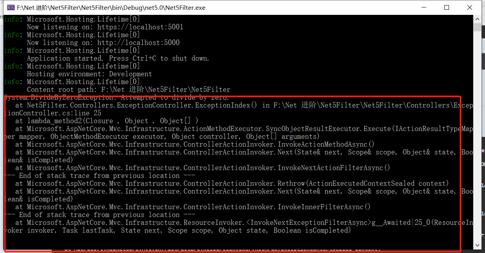
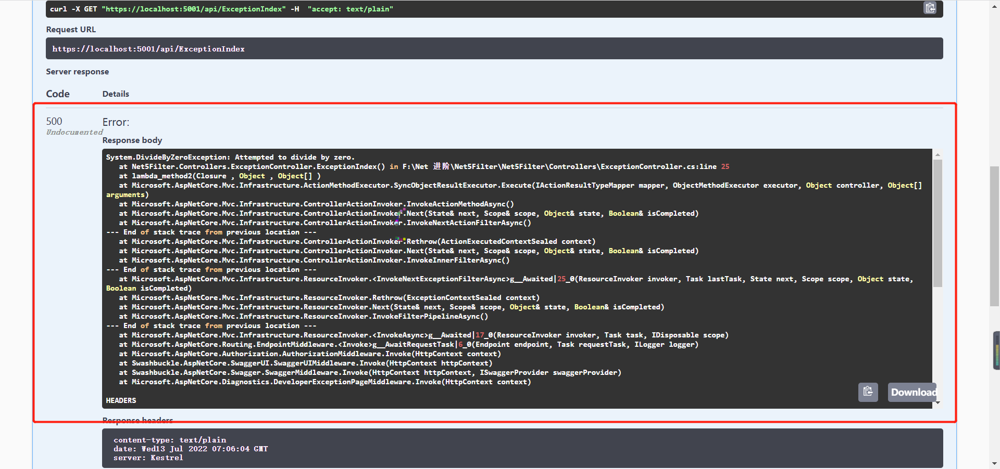
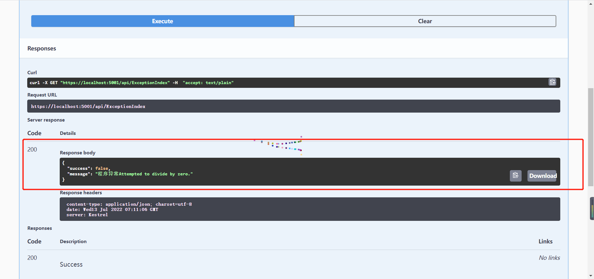

# ExceptionFilter 的同步实现
public class CustomExceptionFilterAttribute : Attribute, IExceptionFilter | |
{ | |
public void OnException(ExceptionContext context) | |
{ | |
Console.WriteLine(context.Exception); | |
} | |
} |
将异常过滤器标注在 action 中
[Route("/api/[action]")] | |
public class ExceptionController:ControllerBase | |
{ | |
public ExceptionController() | |
{ | |
} | |
[HttpGet] | |
[CustomExceptionFilterAttribute] | |
public string ExceptionIndex() | |
{ | |
int zero = 0; | |
int a = 10 / zero; | |
return "exceptionFilter"; | |
} | |
} |
# 运行项目

# 结论
当发生异常时捕获异常进行处理
# ExceptionFilter 的异步实现
public class CustomAsyncExceptionFilterAttribute : Attribute, IAsyncExceptionFilter | |
{ | |
public Task OnExceptionAsync(ExceptionContext context) | |
{ | |
Console.WriteLine(context.Exception); | |
} | |
} |
# ExceptionFilter 在业务上能做什么
对异常事件的记录以便开发人员调试追踪。对异常结果进行人性化处理,对用户更加友好
异常处理之前的结果

public class CustomExceptionFilterAttribute : Attribute, IExceptionFilter | |
{ | |
public void OnException (ExceptionContext context) | |
{ | |
context.Result = new JsonResult (new | |
{ | |
success=false, | |
message="程序异常"+context.Exception.Message | |
}); | |
Console.WriteLine (context.Exception); | |
} | |
} |
异常处理之后的结果

# 局限性
ExceptionFilter有一个捕获异常的范围。如果异常发生在范围外。该异常将不再被捕获